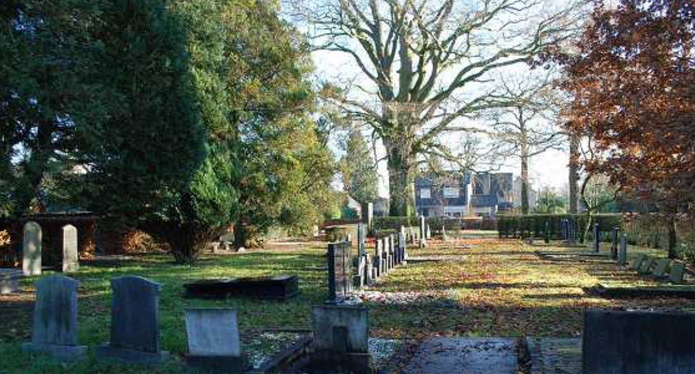

تيتيه دي فريس
1885–1947 · قابلة · مرتبطة بالمقبرة البروتستانتية في شام.
تحقيق أرشيفي في مسار قابلتين عاشتا وعملتا معًا في شام في أوائل القرن 20: من عيّنهما، أين عاشتا، وما الذي تكشفه السجلات عن صداقتهما واختلافهما الطائفي وخدمتهما لمجتمع واحد.
1885–1947 · قابلة · مرتبطة بالمقبرة البروتستانتية في شام.
1884–1959 · قابلة · دُفنت في مقبرة رعية القديس أنطونيوس أبت الكاثوليكية.
تقرير مفوض الملكة عن شام بتاريخ 23 أغسطس 1920 يصف القابلتين بأنهما «صديقتان»، ويذكر أنهما كانتا سابقًا في بارله-ناساو ثم انتقلتا إلى شام، وأنهما أرادتا البقاء معًا.
التقرير نفسه يقول إن إحداهما أصبحت كاثوليكية، بينما بقيت الأخرى بروتستانتية. التقرير لا يسمّي أيتهما في هذه الجملة.
يذكر تقرير 1920 أن انتقالهما من بارله-ناساو إلى شام ارتبط براتب أعلى مقداره 1200 فلورين. يحتاج الأرشيف المالي لتحديد هل كان المبلغ لكل وظيفة أم ضمن ترتيب آخر.
سجل سكان شام 1900–1923، folio 62، يجمع فرانسينا وتيتيه مع والدي تيتيه، ثم يظهر سجل لاحق تيتيه وفرانسينا مع والدة تيتيه الأرملة.
المصدر التراثي المحلي يذكر أنهما عاشتا معًا في دوربسترات/دوربسترات في شام. السجلات السكانية تقوي الصورة أكثر: فرانسينا تظهر داخل الصفحة الأسرية نفسها التي تضم تيتيه ووالديها، ثم مع تيتيه ووالدتها بعد ترمل الأم.
رقم المنزل التاريخي لم يُحسم بعد؛ لا نربطه بالترقيم الحالي قبل قراءة صورة السجل الأصلية وربطها بخريطة/جدول إعادة الترقيم.
سجلات انتقال تيتيه تسجل مهنتها «قابلة»، ووصولها إلى شام في 6 فبراير 1911. تقارير الإدارة في الفترة نفسها تتحدث عن قابلة تستقدمها/تدعمها البلدية وعن دعم مالي حكومي لوظيفة قابلة في شام. هذا يجعل تيتيه المرشحة الأقوى لوظيفة القابلة البلدية الأصلية.
تقرير 1916 يذكر وجود قابلتين في شام وأن واحدة منهما كانت معينة من البلدية. لم يظهر بعد نص قرار مستقل يحدد تعيين فرانسينا أو راتبها بالاسم.
تيتيه ووالدتها كاثرينا مرتبطتان بالمقبرة البروتستانتية في شام، ما يدعم بقوة استمرار تيتيه ضمن البيئة البروتستانتية.
فرانسينا مدفونة في مقبرة رعية القديس أنطونيوس أبت الكاثوليكية. بالجمع مع تقرير 1920، يصبح الاستنتاج الأقوى أن فرانسينا هي التي تحولت إلى الكاثوليكية، لكن سجل التحول الكنسي نفسه لم يُعثر عليه بعد.
ولدت في أمستردام.
ولدت في نايميخن.
سجل الانتقال يضع وجهتها شام، ومهنتها قابلة.
ينتقل غيربن دي فريس وكاثرينا فان دير مولن إلى شام.
مفوض الملكة يذكر القابلتين الصديقتين، بارله-ناساو، راتب 1200 فلورين، رغبتهما في البقاء معًا، والتحول الديني لإحداهما.
كاثرينا فان دير مولن تدفن في المقبرة البروتستانتية في شام.
تنتهي حياة القابلة البروتستانتية في شام.
تدفن في مقبرة رعية القديس أنطونيوس أبت الكاثوليكية.
ليس الغريب مجرد اختلاف الطائفة. الوثائق ترسم بيتًا وعلاقة مهنية طويلة بين امرأتين انتقلتا وعملتا معًا، وذكر مسؤول حكومي صراحة رغبتهما في «البقاء معًا». إحدى المرأتين غيّرت طائفتها، ومع ذلك استمرت الحياة المشتركة داخل بيت ذي جذور بروتستانتية، بينما كان عملهما في خدمة ولادات مجتمع محلي ذي أغلبية كاثوليكية.
ما رقم منزلهما التاريخي في دوربسترات؟ متى دخلت فرانسينا بيت دي فريس؟ متى تحولت إلى الكاثوليكية ولماذا؟ من شهد على التحول؟ أيتهما كانت الموظفة البلدية رسميًا في كل سنة؟ ماذا كان يعني مبلغ 1200 فلورين؟ وهل بقيت فرانسينا في المنزل نفسه بعد وفاة تيتيه سنة 1947؟

An archival investigation into two midwives who lived and worked together in Chaam in the early twentieth century: who appointed them, where they lived, and what the records reveal about friendship, confessional difference and public service.
1885–1947 · midwife · linked to Chaam's Protestant cemetery.
1884–1959 · midwife · buried in the Roman Catholic St Antonius Abt parish cemetery.
The Queen's Commissioner report of 23 August 1920 calls the two midwives “friends”, says they had previously been in Baarle-Nassau, moved to Chaam, and wanted to remain together.
The same report states that one had become Catholic while the other remained Protestant, without naming which woman in that sentence.
The 1920 report connects their move from Baarle-Nassau to Chaam with a higher salary of 1,200 guilders; the exact administrative meaning still requires financial records.
Chaam's 1900–1923 population register, folio 62, places Francina and Tetje on the same household page as Tetje's parents; a later register again places the two women with Tetje's widowed mother.
Local heritage material says the two women lived together on Dorpstraat/Dorpsstraat. The population registers go further by placing Francina within the same household record as Tetje and her parents.
The historic house number remains unresolved and should not be mapped onto the present numbering without the original register image and renumbering records.
Tetje's migration record identifies her profession as midwife and records her move to Chaam on 6 February 1911. Contemporary administrative reports discuss a midwife recruited or supported by the municipality and state support for a Chaam midwife post, making Tetje the strongest candidate for the original municipal appointment.
A 1916 report says Chaam had two midwives and that one was municipally appointed. No separate appointment decision naming Francina has yet surfaced.
Tetje and her mother Catharina are associated with Chaam's Protestant cemetery, strongly supporting Tetje as the woman who remained Protestant.
Francina was buried in the Roman Catholic St Antonius Abt parish cemetery. Combined with the 1920 report, the strongest inference is that Francina was the convert to Catholicism; the church conversion record itself has not yet been found.
Born in Amsterdam.
Born in Nijmegen.
Her migration record gives Chaam as destination and midwife as profession.
Gerben de Vries and Catharina van der Meulen relocate to Chaam.
The Queen's Commissioner records the two friends, Baarle-Nassau, the 1,200-guilder salary, their wish to stay together and the confessional conversion of one woman.
Tetje's mother is buried in Chaam's Protestant cemetery.
The Protestant midwife dies in Chaam.
She is buried in the Roman Catholic parish cemetery.
The unusual feature is not simply confessional difference. The records describe a durable professional and household bond between two women who moved and worked together, whose wish to “remain together” was noteworthy enough to enter an official government report. One apparently changed confession while their shared life continued in a Protestant-rooted household serving a predominantly Catholic community.
What was their historic house number? When did Francina enter the De Vries household? When and why did she become Catholic? Who witnessed the conversion? Which woman held the municipal appointment in each period? What exactly did the 1,200 guilders cover? Did Francina remain in the same house after Tetje died in 1947?
Archiefonderzoek naar twee vroedvrouwen die in het begin van de twintigste eeuw samen in Chaam woonden en werkten: wie hen benoemde, waar zij woonden en wat de registers vertellen over vriendschap, geloofsverschil en publieke zorg.
1885–1947 · vroedvrouw · verbonden met de protestantse begraafplaats van Chaam.
1884–1959 · vroedvrouw · begraven op het rooms-katholieke parochiekerkhof H. Antonius Abt.
Het verslag van de Commissaris van de Koningin van 23 augustus 1920 noemt de twee vroedvrouwen “vriendinnen”, vermeldt dat zij eerder in Baarle-Nassau waren, naar Chaam kwamen en samen wilden blijven.
Hetzelfde verslag zegt dat één van hen katholiek was geworden terwijl de andere protestants bleef; in die zin worden de namen niet gekoppeld aan de bekentenis.
Het verslag verbindt hun verhuizing vanuit Baarle-Nassau met een hoger salaris van 1.200 gulden. De precieze administratieve betekenis moet nog uit financiële stukken blijken.
Het bevolkingsregister Chaam 1900–1923, folio 62, plaatst Francina en Tetje op dezelfde huishoudpagina als Tetjes ouders; een later register plaatst de vrouwen opnieuw bij Tetjes weduwe geworden moeder.
Lokale erfgoedinformatie zegt dat zij samen aan de Dorpstraat/Dorpsstraat woonden. De bevolkingsregisters versterken dit beeld doordat Francina in hetzelfde huishouden als Tetje en haar ouders verschijnt.
Het historische huisnummer is nog niet vastgesteld. Het mag niet zonder de originele registerafbeelding en omnummeringsgegevens aan de huidige nummering worden gekoppeld.
Tetjes verhuisregister noemt haar vroedvrouw en registreert haar vertrek naar Chaam op 6 februari 1911. Bestuurlijke bronnen uit dezelfde periode spreken over een door of voor de gemeente aangetrokken vroedvrouw en rijkssteun voor de Chaamse vroedvrouwenpost. Tetje is daarom de sterkste kandidaat voor de oorspronkelijke gemeentelijke benoeming.
Een verslag uit 1916 noemt twee vroedvrouwen in Chaam en zegt dat één door de gemeente was aangesteld. Een afzonderlijk benoemingsbesluit op naam van Francina is nog niet gevonden.
Tetje en haar moeder Catharina zijn verbonden met de protestantse begraafplaats van Chaam. Dat ondersteunt sterk dat Tetje protestants bleef.
Francina werd begraven op het rooms-katholieke parochiekerkhof H. Antonius Abt. Gecombineerd met het verslag uit 1920 is de sterkste gevolgtrekking dat zij degene was die katholiek werd. Het kerkelijke bekeringsregister zelf ontbreekt nog.
Geboren in Amsterdam.
Geboren in Nijmegen.
Het verhuisregister noemt Chaam als bestemming en vroedvrouw als beroep.
Gerben de Vries en Catharina van der Meulen verhuizen naar Chaam.
De Commissaris noteert de twee vriendinnen, Baarle-Nassau, 1.200 gulden, hun wens samen te blijven en de geloofsovergang van één van hen.
Tetjes moeder wordt op de protestantse begraafplaats begraven.
De protestantse vroedvrouw overlijdt in Chaam.
Zij wordt begraven op het rooms-katholieke parochiekerkhof.
Niet alleen het geloofsverschil is opvallend. De bronnen tonen een langdurige professionele en huishoudelijke band tussen twee vrouwen die samen verhuisden en werkten, en wier wens om “samen te blijven” belangrijk genoeg was om in een officieel bestuursverslag terecht te komen. Eén veranderde vermoedelijk van geloof terwijl het gedeelde leven in een protestants geworteld huishouden doorging en zij een overwegend katholieke gemeenschap dienden.
Wat was hun historische huisnummer? Wanneer kwam Francina in het huishouden De Vries? Wanneer en waarom werd zij katholiek? Wie waren getuigen? Wie had in welke periode de gemeentelijke benoeming? Waarop sloeg de 1.200 gulden precies? Bleef Francina na Tetjes dood in 1947 in hetzelfde huis?